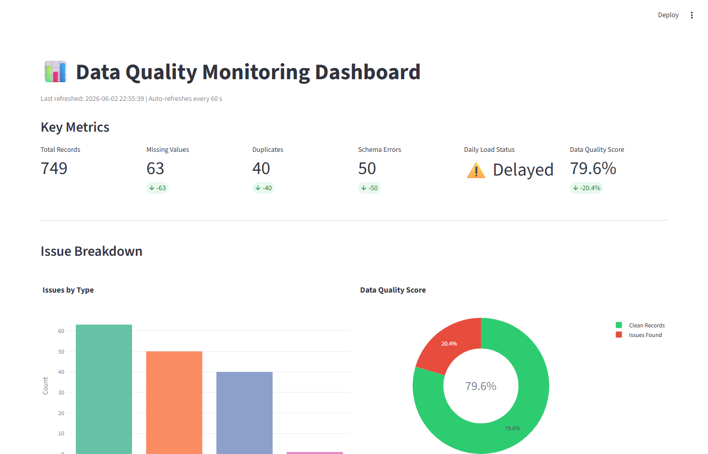

Featured · Data Engineering
Data Quality Monitoring Dashboard
An end-to-end automated data quality pipeline that catches bad data before it reaches dashboards — the same pattern used at banks and healthcare firms. Detects missing values, duplicates, schema errors, and delayed loads, logs every issue to a MySQL audit table, sends HTML email alerts, and surfaces 6 KPIs on a live Streamlit dashboard.
- Python
- Pandas
- MySQL
- SQLAlchemy
- Streamlit
- Power BI
- Airflow